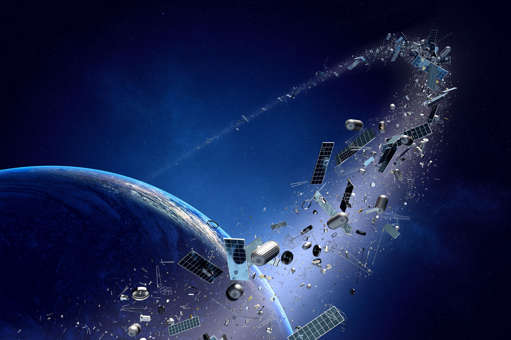

Orbital Debris
"Mankind has left junk everywhere:even space not left behind"
As long as humans have been exploring space, we've also been creating a bit of a mess. Orbiting our planet are thousands of dead satellites, along with bits of debris from all the rockets we've launched over the years. This could pose an issue one day.100 million pieces of space junk are orbiting the Earth at speeds of up to 17,398 mph, posing a challenge for future generations who want to work and live in space.
ORBITAL DEBIRS is one of the major issues in the field of space technology, which includes uncontrollable objects in space, be it a speck of paint to large dead satellites and spacecraft parts which could be kilometers long. They not only pose a major threat to the existing assets in space but also affect future missions to outer space.
Nobu Okada, founder and CEO of Astroscale said "Over the last 5 to 7 years, we saw (about) 2,000 space ventures in the world. Their plans are so aggressive, they’re going to launch 10,000 to 20,000 satellites over the next 5 to 10 years, We see the exponential growth of objects in space.”
There are more than 500,000 pieces of junk floating around Earth’s orbit, including defunct satellites, rocket boosters, nuts and bolts, all of which pose a substantial threat to astronauts and spacecraft, according to U.S. space agency NASA. The European Space Agency said that as of January 2018, there are about 29,000 objects larger than 10 centimeters, around 750,000 objects that range between 1 cm to 10 cm and about 166 million objects between 1 millimeter to 1 cm in size.
"We've reached a point where the collision rate between these larger objects, generating debris, is faster than it can be cleaned out by the natural environment," Kessler said.
The so-called "Kessler Syndrome" refers to a situation in which the density of objects in orbit is high enough that collisions between objects cause a cascade effect -- with each collision generating more debris that leads to more collisions.

For every 100 satellites, 99 need to be de-orbited as soon as their missions are over, typically within five years of it ending. That entails lowering the altitude of the satellite so that it quickly succumbs to Earth’s gravity and burns up during the descent through our planet’s atmosphere. If this doesn’t happen, then the population of spacecraft in low Earth orbit starts to grow significantly over the years.
Deorbiting mechanisms are enforced to handle debris.These machanims can be of two types, i.e., active and passive. Active deorbiting mechanisms are challenging, adds extra mass and volume to the spacecraft, and also they require a surplus amount of propellant for post-mission deorbiting, which thus needs some of the subsystems to be active until re-entry assured.Contrarily passive deorbiting mechanisms do not require a power supply from the spacecraft, need no monitoring, and also can perform re-entry more effectively.
Out of different types of passive deorbiting mechanisms, electrodynamic tethers(EDTs) are one of the most effective ones. In this paper, we will be focusing on the basics of electrodynamic tethers, the issues with them.Then finally the major issue among those i.e., their long lengths will be addressed and a possible solution of optimization of length is proposed. The reduction of length of the tether is being done by replacing a single long tether with a set of multiple shot tethers. The comparison between the existing concept of a single tether and our idea of multiple tethers is done considering all the different effects, their corresponding advantages and disadvantages in all possible perspectives.